将 SF 接入你的项目
下面来谈谈如何把 SF 接入你自己的项目。你可能已经开始了自己的项目，但喜欢 SF 处理各种系统的方式。本指南会带你完成迁移，并启用 SF 提供的全部功能。
快速导航工具（可选）
在正式把 SF 迁移进项目之前，先看看如何设置 SF 的导航工具栏。这是一个可选的额外功能，不是必需的，但推荐配置。SF 非常重视快速迭代，而这些快速导航工具的目的，就是通过按钮快速打开 SF 核心组件或其他相关资产，让迭代更快。

要把这个工具栏加入项目，需要在项目设置中插入一个“启动 Python 脚本（Startup Py Script）”，让它在引擎启动时执行并创建上面的工具栏。找到启动 Python 脚本的方法：打开 Project Settings > Plugins > Python，在 Startup Scripts 区域新建一个条目。然后，把这段 Python 代码粘贴到新条目中，并重启项目。现在你应该能在编辑器顶部（PIE 按钮旁边）看到“Story Framework”工具栏了。

迁移前的项目设置
碰撞（Collision）
在迁移 SF 内容之前，需要先设置 SFInteraction 射线检测通道，多个系统会用它在关卡中识别 SF 交互物。打开 Project Settings > Collision，新增一个追踪通道（Trace Channel），命名为 SFInteraction，并把默认响应设为“忽略（Ignore）”。
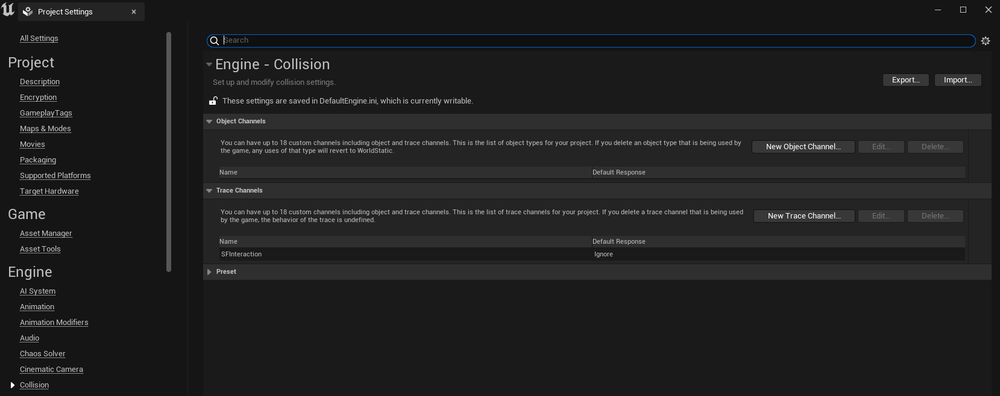
将 SF 迁移到你的项目
打开一份全新的 Story Framework 项目，右键单击主 Story Framework 文件夹，选择“迁移（Migrate）”。然后选择你项目里的 Content 文件夹目录。
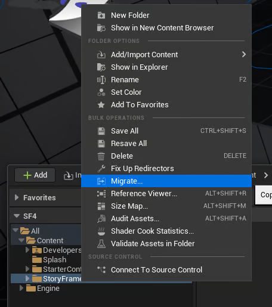
修改玩家控制器
Story Framework 依赖玩家控制器蓝图来实现功能。如果你的项目还没有玩家控制器，需要先创建一个。如果已经有，打开它，添加并挂接下图所示的组件（在组件层级里直接搜索组件名即可找到）。
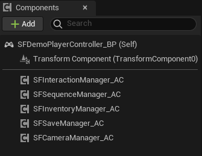
然后，需要给玩家控制器实现 SFPlayerControllerData_BPI 蓝图接口：在蓝图顶部进入“类设置（Class Settings）”，添加该接口。

实现接口后，打开蓝图左下角的 获取 SF 组件(Get SF Components) 接口函数，把前面添加的 Actor 组件接到对应的引用上。
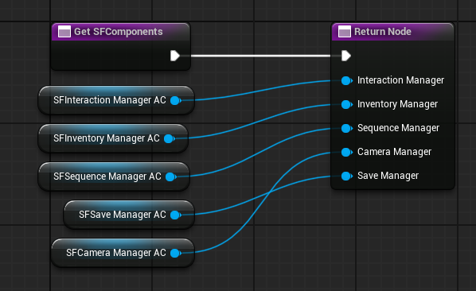
接着，在蓝图顶部的“类默认值（Class Defaults）”区域，添加 SF 的玩家摄像机管理器类。
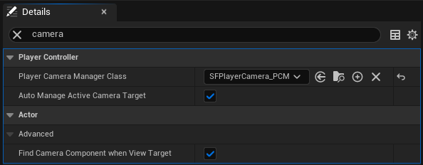
最后，把 Story Framework 项目里的所有输入操作（Input Actions）复制到你自己项目的玩家控制器蓝图中。如果你已经有自己的角色移动方案，可以移除 通用移动(Generic Movement) 图表。
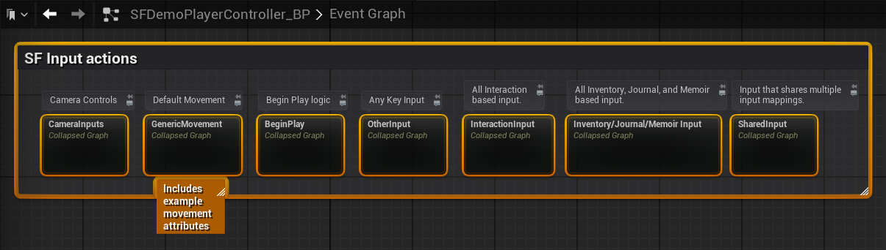
修改玩家角色
SF 摄像机组件
玩家控制器设置好之后，还需要在玩家角色蓝图里做一些小调整。把当前的摄像机组件替换为 SFDefaultCamera_CC 摄像机组件（建议挂在弹簧臂组件上，以获得更平滑的摄像机移动和额外控制）。
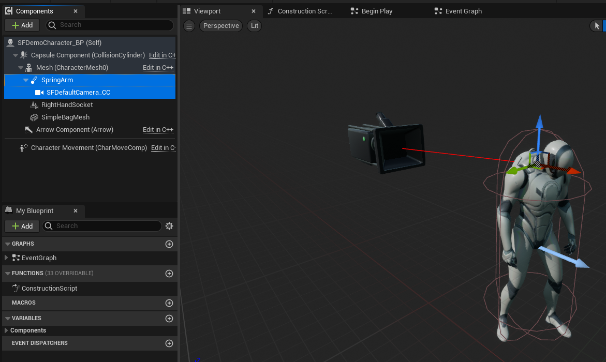
这是处理摄像机系统的常见做法，唯一区别是 SF 的摄像机组件包含一些用于特定摄像机操作的功能。
动画检视依赖（Anim Inspect Dependencies）
动画检视（Animation Inspect） 是一种独立的检视模式，允许玩家在角色手中旋转物品。这个检视模式需要在玩家角色蓝图和角色动画蓝图中设置一些组件与逻辑。
首先，把 AnimInspectAnchor_SC 场景组件添加到玩家角色蓝图（最好挂到角色的胶囊体组件下）。下图给出了这个场景组件的一些默认变换值。你需要把这个场景组件放在角色右肩上方；如果你的角色比例与默认 UE Manny 不同，请相应调整位置。
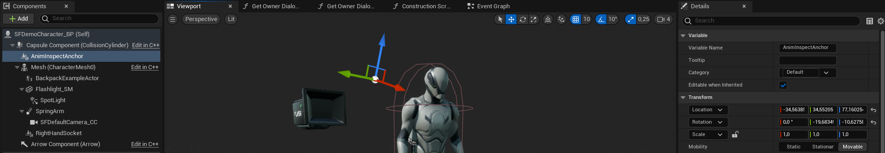
接下来，需要对自定义角色的动画蓝图做一些增改。首先打开 SF 的示例角色动画蓝图 ABP_Manny，复制事件图表中标记为 “Copy over to your own Anim BP” 的注释区块，粘贴到你自己的动画蓝图事件图表中，并连接到 蓝图更新动画(BlueprintUpdateAnimation) 事件（点击“编译”，并创建缺失的 检视手部旋转(InspectHandRotation) 变量）。
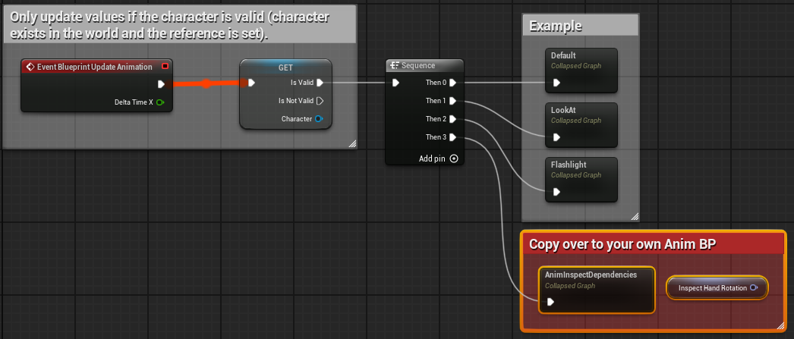
然后进入 SF 示例动画蓝图 ABP_Manny 的动画图表（Anim Graph），再次复制标记为 “Copy over to your own Anim BP” 的注释区块，粘贴到你自己的角色动画蓝图动画图表中，并连接到当前已有的节点上。
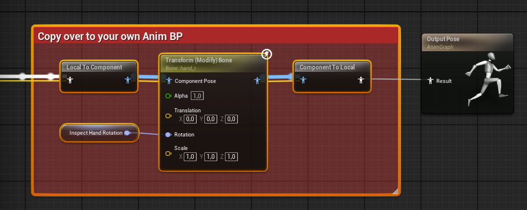
如果你更想看视频教程，可以在 SF 5.1 到 5.2 升级指南的 11:15 到 13:53 部分看到这个过程的完整讲解。
BeginPlay 逻辑
有几件事必须在任意蓝图的 开始运行(BeginPlay) 事件中定义。为了方便以后维护，建议放在玩家控制器或玩家角色蓝图中。
我们需要把 SF 的输入映射添加到玩家，可以使用 更新输入映射上下文(Update Input Mapping Context) 函数。（如果你已经有输入映射，要么把当前输入迁移到 SF 的 SFGameplay_IMC 输入映射上下文中，要么完全移除自己的输入映射。）
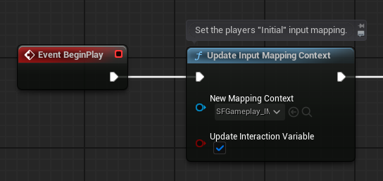
然后，也可以在这里添加 SFSaveManager_AC Actor 组件上的 自动保存(Auto-Save) 函数（可选）。
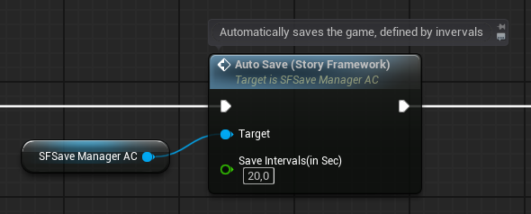
游戏实例
接下来，需要在项目设置中把游戏实例类设为 SFGameInstance_BP。这样才能引用 StoryFrameworkValues 数据资产，并完整使用 SF 的存档系统。
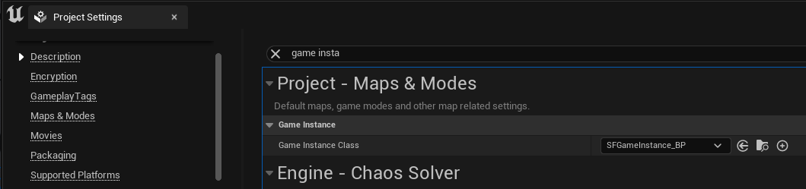
角色限制（如果你不使用 SF 的移动）
SF 会在特定时刻限制移动和摄像机旋转。如果你希望 SF 的某些系统按预期工作，也应该在玩家的移动（Movement）与视角（Look）输入上设置这些限制。移动限制使用 SF 移动条件(SF Movement Condition) 函数。
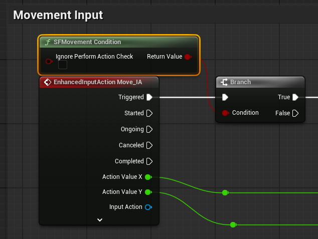
最后，复制 SF 的 SF 摄像机视角条件(SF Camera Look Condition) 图表，并把它连接到你的“视角（Look）”输入上。
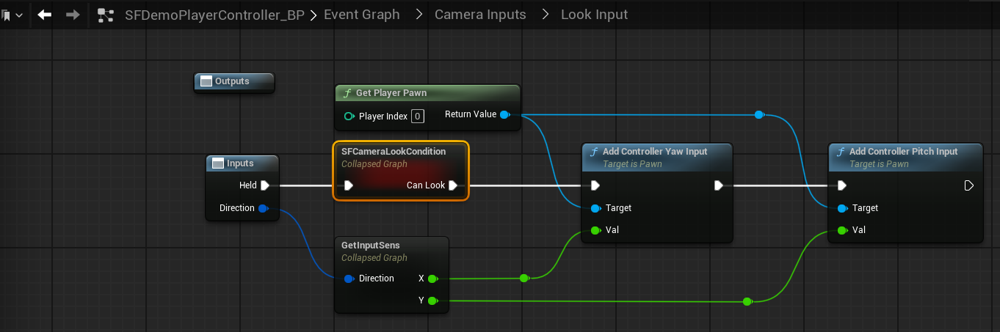
接入检查清单： 碰撞通道 SFInteraction 已添加；玩家控制器挂好 5 个组件并实现 SFPlayerControllerData_BPI；玩家角色使用 SFDefaultCamera_CC；BeginPlay 添加了 SFGameplay_IMC；游戏实例类为 SFGameInstance_BP；不使用 SF 移动时，Movement/Look 都接入了条件函数。